Dashboards for Budgeting, Planning, and Forecasting
In the preceding chapters, we have learned how to design and build Dashboards to provide User Experiences appropriate to various processes and communities in our organization, including intuitive and attractive home pages, highly functional administrative Dashboards, and Executive-level reporting and analysis views.
Now, we will bring many of these concepts together and – with a few additional design considerations and configuration techniques – we will assemble a powerful, flexible, and easy-to-use front end for the members of our team that do the heavy lifting of the Budgeting and Forecasting processes.
Dashboards for Budgeting, Planning, and Forecasting
Our Planning Screen Functional Requirements
When thinking through the overall structure of this Dashboard, let’s keep in mind that our primary goal is to give our End-Users a clean, intuitive, and consistent User Experience. The Planning process is seldom ‘simple’ – and the more complex our organization becomes, the less simple this process is likely to be. That said, with a well-thought-out standard screen layout and clear, intuitive navigation, we can simplify the process of producing the plan, no matter how many ‘moving pieces’ it contains, and we can avoid the visual clutter and User confusion that arises when we fall into the trap of trying to fit everything (or even just a little too much) on a single screen.
Like most organizations, our plan can be broken up into a handful of separate but related parts. For this example, let’s assume that the Users of this Dashboard will be focusing on three major components of the plan: Revenues, Expenses, and various Assumptions used to perform Calculations.
Although many Users will be responsible for the Revenue and Expense plans for our various regions, products, and cost centers, the Planning process for any one region or product or cost center will be essentially the same as any other. We can leverage this commonality in the design of our Dashboard. As much as we can, we will try to make every screen look and feel the same for the User, and even though the Revenue Planning process may be very different from the Expense Planning process, certain broad concepts will be identical.
Let’s start with navigation and Workflow. No matter which specific part of the plan we are working on, we will always want to be able to 1. easily navigate to another part of the plan, and 2. mark the part of the plan we are working on as ‘complete’ when we are done.
To provide simple one-click navigation, we will include a panel along the left-hand side of the screen with a button for each of the major functional parts of the plan. We will also include a top-level ‘Overview’ button that will allow us to review a summarized view of the full plan at any time, with all of the details pulled together.
To keep track of which parts of the plan are completed and which are not, we will leverage OneStream’s Workflow functionality. Each of the major sections of the plan (Revenues, Expenses, etc.) will be configured as steps in the Workflow Profile for the Budget Scenario Type. On our Dashboard, we will include two buttons in the upper-right corner of the screen – one to mark the current Workflow step complete, and another to revert that step if necessary.
We can even tie the navigation and Workflow concepts together by configuring each navigation button to reflect the completion status of its respective step. Since these buttons will be visible at all times on the left-hand side of the screen, having the buttons turn green as each step is marked complete will let us know – at a glance – where we stand in the overall process and what we still need to finish up.
Dashboards for Budgeting, Planning, and Forecasting
Leveraging Dashboard Business Rules
Several of these design ideas are not out-of-the-box – that is, rather than simply relying on the standard functionality of a Component (such as a button), we will need to ‘teach’ that button to perform very specific tasks that OneStream’s engineering team might have never guessed we would dream up.
Fortunately for us, the OneStream platform provides us with the ability to create Business Rules that can perform virtually any logic we require for our specific implementation. When working with Dashboards, we have three broad categories of rules:
Dashboard Data Set Rules, which can be used to collect, manipulate, and enrich sets of data. These rules are often used to retrieve data from sources such as SQL tables and organize this data in a format that is easily used by a Dashboard data adapter to feed a chart or BI Viewer Component.
Dashboard XFBR String Rules, which are often used to dynamically generate the configuration of an object based on certain specified conditions. For example, in this exercise, we will use an XFBR String Rule to control the color of our navigation buttons to give an easy visual guide to which button is currently selected (with a grey background), and which of our buttons represent tasks that have been completed (with a green background).
Dashboard Extender Rules, which are the workhorses of the Dashboard Business Rules. With Extender Rules, we can make our Dashboards do nearly anything. Extender Rules are often used to perform relatively complex tasks when a User performs a specific action within a Dashboard, such as clicking a button, changing the selected Member in a combo box, or reloading the Dashboard. We will use an Extender Rule to complete or revert Workflow steps when the User clicks the relevant buttons, but these rules can also be used to update the values of parameters, launch data management jobs, dynamically generate and execute SQL scripts, and much, much more!
Dashboards for Budgeting, Planning, and Forecasting
Designing Our Dashboard Layout
We can now begin laying out our Planning Dashboard. As before, our Planning Dashboard design will start as a wireframe sketch. As we often do, across the top of the screen, we will include a header bar with our logo, the title of our Dashboard, and the two Workflow buttons.
Down the left-hand side, we will have our navigation pane, with each of our major functional areas (and Workflow steps) represented by a large button. This leaves a large section of the screen available for the actual content required to complete each step in the process. Each of these steps will have its own specific content – Forms to fill out, charts to review, Calculations to run, etc.
These functionally-specific screens will be configured as their own Dashboards, and will be displayed as embedded content in the body of our Planning Dashboard, with the header and navigation panes providing a consistent frame.
With these ideas in mind, we can sketch out our initial design like this (Figure 14.1):
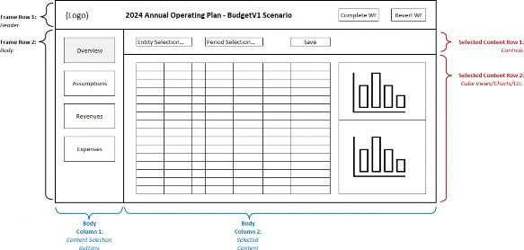
Figure 14.1
Dashboards for Budgeting, Planning, and Forecasting
Building Our Planning Dashboard
As in previous exercises, we will begin by mapping out the various nested Dashboard panels that will make up the whole screen, and we will get started by creating a Dashboard Maintenance Unit and several Dashboard Groups to keep them organized.
We will have one Dashboard Group (00 Planning Dashboard) that will hold the main Dashboard, another (01 Planning Common) that will hold the header and navigation Dashboards, and several more (e.g., 02 Planning Overview) that will be dedicated to each of our main content sections (Figure 14.2).
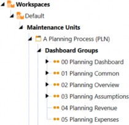
Figure 14.2
The main Dashboard will form the overall frame. This will be a simple one-column grid with two rows, each containing an embedded Dashboard that we will create in the next steps (the header and the body).
All we need to do is create a Dashboard named 00_Planning_PLN in the 00 Planning Dashboard Group and set this Dashboard’s Row 1 height to 70 (which will accommodate our header). We will nest embedded Dashboards comprising the header, navigation pane, and various User-selected Content Dashboards within this main frame, using our usual naming convention to give each embedded Dashboard a clear and logical name. Altogether, our Dashboards will fit together like this:
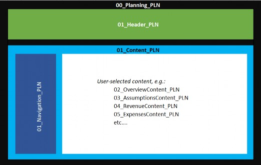
Figure 14.3
We can see that 01_Header_PLN (shown above in green) and 01_Content_PLN (shown above in light blue) are embedded as the two rows in the main Dashboard 00_Planning_PLN (shown above in black).
01_Navigation_PLN (shown above in dark blue) is embedded as the first column in the two-column grid Dashboard 01_Content_PLN. The second, larger column will eventually contain whichever content-specific Dashboard is appropriate for the button the User has clicked in the navigation pane.
For now, we can create and assemble these Dashboards, and in the sections that follow, we will configure and attach the required Components for each Dashboard. See Figure 14.4 for a summary of these Dashboards and their structure. We will create the various content-specific Dashboards as ‘placeholders’ for now – we will revisit their structures later.
| Column Widths | ||||||||
| Dashboard Name | Type | Rows | Columns | Row1 Height | Col 1 | Col 2 | Col 3 | Col 4 |
| 00_Planning_PLN | Grid | 2 | 1 | 70 | * | n/a | n/a | n/a |
| 01_Header_PLN | Grid | 1 | 4 | * | 250 | * | 175 | 175 |
| 01_Content_PLN | Grid | 1 | 2 | * | 190 | * | n/a | n/a |
| 01_Navigation_PLN | Vertical Stack Panel | n/a | n/a | n/a | n/a | n/a | n/a | n/a |
| 02_OverviewContent_PLN | Uniform | |||||||
| 03_AssumptionsContent_PLN | Uniform | |||||||
| 04_RevenueContent_PLN | Uniform | |||||||
| 05_ExpensesContent_PLN | Uniform | |||||||
Figure 14.4
Dashboards for Budgeting, Planning, and Forecasting
Configuring the Header
The header will contain several Components – the logo, a label for the title, and the two Workflow buttons. We will create this as a one-row grid with four columns, with one column for each Component, and name it 01_Header_PLN.
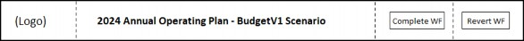
Figure 14.5
Dashboards for Budgeting, Planning, and Forecasting › Configuring the Header
The Logo
The logo will be configured very much like the example on our landing page (see Chapter 11). However, on this screen, we want to feature the logo much less prominently, so instead of a height of 60 pixels, we will set the height to 30.
Dashboards for Budgeting, Planning, and Forecasting › Configuring the Header
The Title
For the title, we will use a label Component and leverage the substitution variables |WFTime| and
|WFScenarioDesc| to make the title automatically reflect the Year and Scenario we are currently working on.
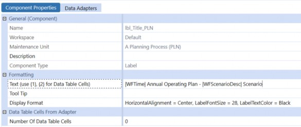
Figure 14.6
Dashboards for Budgeting, Planning, and Forecasting › Configuring the Header
The Workflow Buttons
For the two Workflow buttons, we will use icons to give the Dashboard a nice ‘polished’ look. These icons are image files that we will import to our Dashboard Maintenance Unit, just like we have done in previous exercises. When configuring our two buttons, we select the Image File Source Type as Dashboard File and enter the name of our picture in the Image Url or Full File Name setting.
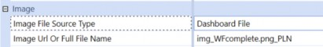
Figure 14.7
For these two buttons to do their jobs, we will take advantage of OneStream’s remarkably powerful Business Rules Engine. In our sample application, we have created a Dashboard Extender Business Rule named AAA_SimpleWorkflow. This rule contains two functions: WorkflowComplete and WorkflowRevert.
The rule can be called from any button on any Dashboard attached to any Workflow Profile, and will do exactly what it sounds like: the WorkflowComplete function will mark the current Workflow step as Completed, and the WorkflowRevert function will revert it.
You may have seen similar Business Rules in action when using OneStream MarketPlace Solutions. For example, People Planning, Capital Planning, Account Reconciliations, and many other solutions include similar logic. The rules included with those solutions can be relatively complex. The fundamentals of how they work, though, are straightforward.
Dashboards for Budgeting, Planning, and Forecasting › Configuring the Header
Dashboard Extender Business Rules
Although the details of writing Business Rules are outside the scope of this book, let’s take a look at our AAA_SimpleWorkflow rule to get a sense of how they work.
(For a much deeper dive into Business Rules, I highly recommend Jon Golembiewski’s excellent book OneStream Finance Rules and Calculations Handbook, available from OneStream Press.)
Like all Dashboard Extender Business Rules, our rule first checks what Type of function is being called – here, it’s a ComponentSelectionChanged event (highlighted line A). This means the rule was triggered by a User ‘doing something’ with a Dashboard Component – in this case, a button was clicked.
Then, the rule checks for the Function Name passed to the rule by the button – in this example, either WorkflowComplete or WorkflowRevert (highlighted line B).
Finally, the rule uses the Business Rule API function SetWorkflowStatus to either complete or revert the Workflow as appropriate (highlighted line C).
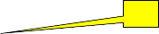
A
Select Case args.FunctionType
Case Is = DashboardExtenderFunctionType.ComponentSelectionChanged
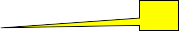
| B |
'WorkflowComplete: User clicked "Complete Workflow" button, so mark this step as complete If (args.FunctionName.XFEqualsIgnoreCase("WorkflowComplete"))
BRApi.Workflow.Status.SetWorkflowStatus(si, si.WorkflowClusterPk, StepClassificationTypes.Workspace, _
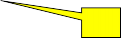
C
WorkflowStatusTypes.Completed, "Workflow Completed", "", _ "Dashboard Button", Guid.Empty)
Dim selectionChangedTaskResult As New XFSelectionChangedTaskResult() selectionChangedTaskResult.WorkflowWasChangedByBusinessRule = True Return selectionChangedTaskResult ‘ WorkflowRevert: User clicked the “Revert” button, so mark this step as NOT complete Else If (args.FunctionName.XFEqualsIgnoreCase(“WorkflowRevert”))
BRApi.Workflow.Status.SetWorkflowStatus(si, si.WorkflowClusterPk, StepClassificationTypes.Workspace, _
WorkflowStatusTypes.InProcess, “Workflow Reverted”, “”, _ “Dashboard Button”, Guid.Empty)
Dim selectionChangedTaskResult As New XFSelectionChangedTaskResult() selectionChangedTaskResult.WorkflowWasChangedByBusinessRule = True Return selectionChangedTaskResult
End If End Select
Let’s take a closer look at line C. This rule reads:
BRApi.Workflow.Status.SetWorkflowStatus(si, si.WorkflowClusterPk, StepClassificationTypes.Workspace, WorkflowStatusTypes.Completed, "Workflow Completed", "", "Dashboard Button", Guid.Empty)
This may look confusing, but once you break it down, the syntax is not too hard to understand. The line begins with:
BRApi, which means that we are calling a function that is part of OneStream’s Business
Rule API.
Workflow, which means we will use functionality that is part of the application’s
Workflow Engine.
Status, which is the thing we want to update.SetWorkflowStatus, which is what we want to do – in this case, set it toCompleted.
The SetWorkflowStatus function needs some information to perform its job, and that information is included in the various parameters within the parentheses. The object si is managed by the OneStream application and contains a great deal of useful system information. The other parameters make sense if you think about what we are doing – the function will need to know which Workflow we want to mark complete (this is the WorkflowClusterPK), what Type of Workflow step we are completing (Workspace), what we want its new status to be (Completed), and various informative text parameters that will be writing to the audit log.
To call a Dashboard Extender Business Rule from a button, the syntax looks like this:
{RuleName}{FunctionName}{Paremeter1 = 123, Parameter2 = “ABC”, etc.}
Our functions do not need any passed parameters, so for our Complete Workflow button, we just need to set the Selection Changed Server Task property to Execute Dashboard Extender Business Rule, and enter {AAA_SimpleWorkflow}{WorkflowComplete}{} on the Selection Changed Server Task Arguments property.
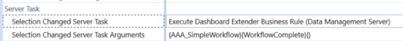
Figure 14.8
The last step in configuring our Workflow buttons is to set the Selection Changed User Interface action to Refresh. Later on, we will be configuring our navigation buttons to have green backgrounds if their related Workflow steps are complete – this setting will ensure those buttons repaint to show their correct colors when the Workflow buttons are clicked.
With our four header Components created, we can now add them to our 01_Header_PLN Dashboard. If we give that Dashboard a test run, after a little fine-tuning of font sizes, column widths, etc., our header now looks like this:
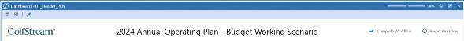
Figure 14.9
Dashboards for Budgeting, Planning, and Forecasting › Configuring the Navigation Pane
Dashboard XFBR String Business Rules
For each button’s display format, instead of using the traditional text string of formatting parameters (e.g., Bold = True, BackgroundColor = Blue), we will use a Dashboard XFBR String Business Rule we have created called PLN_ParamHelper (see below). This rule will dynamically assemble a formatting string based on the Workflow step associated with the button. If a button’s Workflow step has been completed, we will make the button green. If the button is associated with the Workflow step we are currently using, we will make the button blue. If neither of these conditions are true, we won’t change the buttons color at all, so it will be displayed in its default color (white).
Here’s the full rule that performs this logic and returns a formatting string appropriate for the current status of the button calling the rule:
If args.FunctionName.XFEqualsIgnoreCase("FormatButton") Then
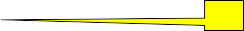
' Retrieve the name of the requested Workflow Step (e.g., “Revenue”) passed in by this button
Dim wfStepForBtn As String = args.NameValuePairs("WFStep") A
' Set the basic formatting string options
B
Dim buttonFormat As String = "FontSize = 16, HorizontalAlignment = Center, Width = 120, Height = 60, _
MarginBottom = 20, MarginTop = 20, "
' Get the name of the currently active Workflow information, and its top-level parent
Dim wfname As String = BRApi.Workflow.Metadata.GetProfile(si, si.WorkflowClusterPk.ProfileKey).Name Dim wfparent As String() = wfname.Split(".")
' Get the workflow information for the workflow step passed in by the button.
' If the requested step is "Review" we want to use the 'Top Level' workflow (e.g., “Budget Workflow); otherwise, we want ‘the name of the parent level workflow combined with the requested workflow step (e.g., “Budget Workflow.Revenue”). Dim wfToCheck As WorkflowUnitClusterPk = si.WorkflowClusterPk
If wfStepForBtn.XFEqualsIgnoreCase("Review") Then wfToCheck.ProfileKey = BRApi.Workflow.Metadata.GetProfile(si, wfparent(0)).ProfileKey
Else
wfToCheck.ProfileKey = BRApi.Workflow.Metadata.GetProfile(si, wfparent(0) & "." & wfStepForBtn).ProfileKey
End If
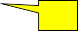
C
Dim wfStatusForBtn As WorkflowInfo = BRApi.Workflow.Status.GetWorkflowStatus(si, wfToCheck, False) 'Get the numerical indexes of the requested workflow step and the currently active workflow step
Dim currentWFindex As Decimal = args.SubstVarSourceInfo.WFProfileIndex
Dim buttonWFindex As Decimal = BRApi.Workflow.Metadata.GetProfile(si, wftocheck.ProfileKey).Index
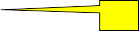
D
'If the step is complete, change text to white and the background to green If (wfStatusForBtn.AllTasksCompleted) Then buttonFormat = buttonFormat & "TextColor = White, BackgroundColor = Green, Bold = True"
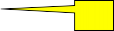
E
'If this is the button for the selected workflow, change text to white and the background to blue Else If currentWFindex = buttonWFindex Then buttonFormat = buttonFormat & "TextColor = White, BackgroundColor = XFDarkBlueBackground, _
BorderColor = XFDarkBlueBackground, Bold = True"
End If
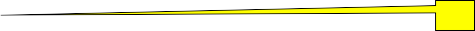
'Pass back a string with the appropriate button format settings
Return buttonFormat F
End If
Let’s take a closer look at the most important lines in this rule and see what they are doing.
When this rule is invoked by a Dashboard button, the button will pass in the name of the Workflow step that would be selected if that button were clicked – we store that in a string variable named wfStep (line A):
Dim wfStepForBtn As String = args.NameValuePairs("WFStep")
Then, we set the basics of the button’s display format in a string variable called buttonFormat (line B):
Dim buttonFormat As String = "FontSize = 16, HorizontalAlignment = Center, Width = 120, Height = 60, MarginBottom = 20, MarginTop = 20, "
After retrieving relevant information about the currently active Workflow Profile as well as the Workflow Profile associated with the button being formatted, we use the BRAPI function GetWorkflowStatus to retrieve the current status of the this button’s Workflow step (line C):
Dim wfStatusForBtn As WorkflowInfo = BRApi.Workflow.Status.GetWorkflowStatus(si, wfToCheck, False)
If the button we are currently formatting is for a Workflow step that has been completed, we will set the background color for that button to green and its text to a bold white font (line D):
buttonFormat = buttonFormat & "TextColor = White, BackgroundColor = Green, Bold = True"
If this button’s Workflow step has not been completed, but this is the button associated with our currently selected Workflow step, we will set the button’s background color to blue (line E):
buttonFormat = buttonFormat & "TextColor = White, BackgroundColor = XFDarkBlueBackground, BorderColor = XFDarkBlueBackground, Bold = True"
Finally, the rule returns the complete formatting string back to the Dashboard button, so it will have the correct size, font, background color, and any other formatting options we might be using the rule to control (line F):
Return buttonFormat
To apply this rule to our buttons, we just set the Display Format to XFBR(PLN_ParamHelper, FormatButton, wfStep=[Expenses]) with the wfStep parameter set as appropriate to the button (Figure 14.12).
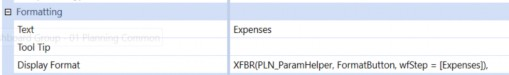
Figure 14.12
Dashboards for Budgeting, Planning, and Forecasting › Configuring the Navigation Pane
Setting the Button’s Bound Parameter
Each button will also set the value of a Bound Parameter to the name of the Dashboard we want displayed in the body of our main Dashboard when that button is clicked. We will first create this parameter as an Input Value Type, name it prm_PlanningContent_PLN, and set its Default Value to the name of one of our Content Dashboards (Figure 14.13). We will actually flesh out those Dashboards in a later step, but for now we can enter the name we plan to use (e.g., 02_OverviewContent_PLN).
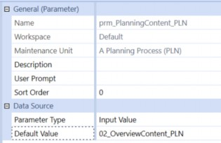
Figure 14.13
Now, for each of our navigation buttons, we will set the Bound Parameter to prm_PlanningContent_PLN, and enter the name of the Content Dashboard we plan to associate with each button in the Parameter Value for Button Click setting (e.g., 05_ExpensesContent_PLN).
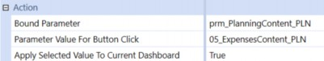
Figure 14.14
Dashboards for Budgeting, Planning, and Forecasting › Configuring the Navigation Pane
Setting the Button’s POV Action
Next, we want each button to change the currently selected Workflow as appropriate. In Figure 14.15, we can see that clicking the btn_Expenses_PLN button will set our Workflow Profile to Equipment Plan NA.Expenses, our Workflow Scenario to BudgetWorking, and our Workflow Time to the current Workflow year.
(In this simple example, we have hard-coded some of these settings – in a fully configured application, we would most likely use parameters for the top-level Workflow name (Equipment Plan NA) and the current active Budget Scenario.)
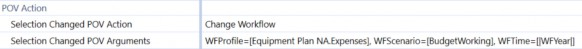
Figure 14.15
Finally, we will set the Selection Changed User Interface Action to Refresh, so any changes to button formatting and the displayed content will immediately appear on our screen after clicking the button.
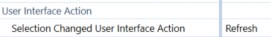
Figure 14.16
Now that we have our buttons configured, we simply add them to the vertical stack panel Dashboard named 01_Navigation_PLN in the order we want them to appear.
Dashboards for Budgeting, Planning, and Forecasting
Embedding Our Content Dashboards
The final step in configuring our Planning process navigation Dashboard is to include the selected Content Dashboard in the large space filling the right side of the screen. Whenever we click one of our navigation buttons, it stores the name of its associated Content Dashboard in the parameter named prm_PlanningContent_PLN, and we will use this stored text to dynamically change the content of our Dashboard by creating an Embedded Dashboard Object.
Dashboards for Budgeting, Planning, and Forecasting › Embedding Our Content Dashboards
Embedded Dashboards
Each time we create a Dashboard, the application automatically creates an Embedded Dashboard Object. These act as pointers when we are nesting one Dashboard inside another. We can also create our own; instead of having it point to a specific named Dashboard, we can use a parameter to make this embedded Dashboard present different content (depending on the current value stored in that parameter).
Figure 14.17 shows our embedded Dashboard Component – notice that for the Embedded Dashboard property, we have used our prm_PlanningContent_PLN parameter.
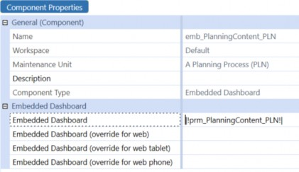
Figure 14.17
We will now add this Embedded Dashboard Component as the second Component on our 01_Content_PLN Dashboard, so whatever Dashboard name is currently stored in the Planning Content parameter will appear in the large space to the right of our navigation panel.
Dashboards for Budgeting, Planning, and Forecasting
Attaching Our Dashboard to Our Workflow Profile
Now that we have the core functionality of our Dashboard complete, we can attach it to the Workflow Profile for our Budget process.
As seen in Figure 14.18, the Assumptions step has the Budget Scenario Type configured with the Workspace Name of Workspace. This simply means that when this step is selected, the User should be presented with the Dashboard identified in the Workspace Dashboard Name setting – in this case, it is set to our main Planning Dashboard 00_Planning_PLN.
The Revenues, Expenses, and Parent-level Equipment Plan NA Workflows are configured in the exact same way, with the exact same Dashboard; the way we have configured our buttons, the main Dashboard will show the content appropriate to the Workflow step.
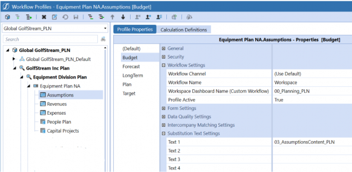
Figure 14.18
Dashboards for Budgeting, Planning, and Forecasting › Attaching Our Dashboard to Our Workflow Profile
Executing a Business Rule When a Dashboard is First Opened
Notice that we have also included the name of the associated Content Dashboard in the Text 1 field for each Workflow step. We will use this to synchronize the content displayed if a User manually selects a Workflow step through the standard OnePlace interface instead of using our Dashboard’s navigation buttons. To make this work, we will add one last change to our 00_Planning_PLN Dashboard.
When the Dashboard is opened for the first time, we will use the Workflow’s Text 1 value for whatever Workflow step is currently active. This will essentially simulate a ‘click’ on the button that points to that step.
We will set our 00_Planning_PLN Dashboard’s Load Dashboard Server Task to Execute Dashboard Extender Business Rule (Once), and the arguments for that task to
{PLN_SolutionHelper}{SelectContent}{selectedContent=|WFText1|}
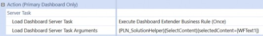
Figure 14.19
This will pass the Text 1 value for the current Workflow step to a very simple Dashboard Extender Business Rule that will be run when the Dashboard is first opened. The rule looks like this:
Select Case args.FunctionType
Case Is = DashboardExtenderFunctionType.LoadDashboard
'When loaded, dashboard will pass |WFText1| value, which contains the appropriate content dashboard for the workflow step. This will be written to the prm_PlanningContent_PLN parameter, which is used by the embeddded dashboard component emb_PlanningContent_PLN.
Dim selectedContent As String = args.NameValuePairs.XFGetValue("selectedContent") brapi.Dashboards.Parameters.SetLiteralParameterValue(si,False, args.PrimaryDashboard.WorkspaceID, _
"prm_PlanningContent_PLN", selectedContent)
End Select
All this does is retrieve the Workflow’s Text 1 value (the name of the Content Dashboard associated with that Workflow), and save that value to the prm_PlanningContent_PLN parameter (which tells our embedded Dashboard Component what to display).
If we now open our Planning Workflow, we will see our Dashboard displayed, with the button for the selected Workflow step highlighted in blue (Figure 14.20).
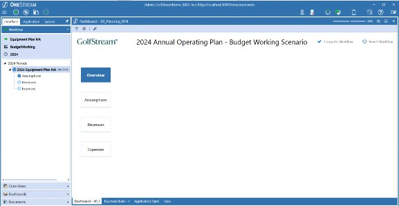
Figure 14.20
If we click on one of the buttons, the Workflow step tied to that button is automatically selected:
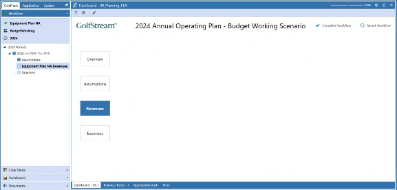
Figure 14.21
If we click the Complete Workflow button, that Workflow step now shows completed, and the button turns green:
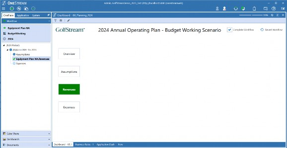
Figure 14.22
It looks and works great! End-Users will be presented with this clean, easy-to-use interface, seeing only the buttons and content they need to complete their Planning process. They can keep the OnePlace panel pinned closed, and never worry about remembering how to navigate through the comprehensive set of application controls displayed there – they will only see the buttons they care about.
Now, all we need is some Planning content to fill in that big white space!
Dashboards for Budgeting, Planning, and Forecasting
Building Our Budget Overview Dashboard
Now that we have the framework for our Planning Dashboard complete and attached to the Workflow Profile, it is time to create the content that will be displayed for each of the steps in the process.
Most of our Content Dashboards are likely to display Cube Views to perform data entry, but for our top-level Workflow step, we would like to see ‘the big picture’. In other words, when the Overview button is clicked, we will show the User a summary Income Statement, with a column showing the current active Budget values, as well as variances from the current year’s Forecast, last year’s Actuals, and a column for the User to enter some text commentary.
Since our Users are likely to be working on plans for multiple Entities, we will include a combo box at the top of the screen to select which Entity they are currently viewing, and we will provide a couple of nice charts on the same screen to give a clear visual of the current state of the Budget.
In a wireframe sketch, our Overview Content Dashboard might look like this:
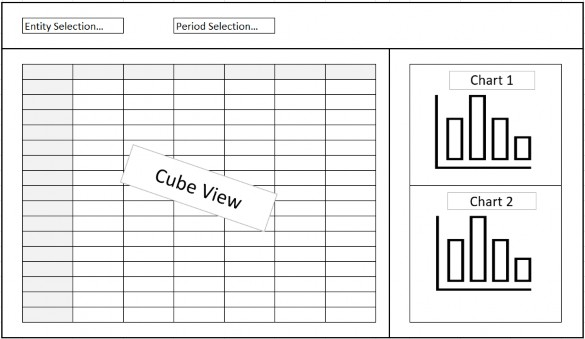
Figure 14.23
Earlier, we made a simple placeholder Dashboard named 02_OverviewContent_PLN. It is time to revisit that Dashboard and make it look and behave like our design.
The first step will be to change the configuration of the 02_OverviewContent_PLN Dashboard to a grid with two rows and one column. The first row will be for the combo boxes and save button; the second row will hold the Cube View and charts.
For the first row, we will create a simple horizontal stack Dashboard to hold our combo boxes and save button. We will call this Dashboard 02_OverviewControls_PLN.
For the second row, we will create another grid Dashboard with one row and three columns – the first column will hold our Cube View, the second column will be a movable splitter, and the third column will hold our charts. We will call this Dashboard 02_OverviewDetails_PLN.
Finally, to stack two charts in the right-hand column, we will create a fourth Dashboard – this one will be a grid with one column and three rows, one for each chart and a moveable splitter between them. We will call this Dashboard 02_OverviewCharts_PLN.
To summarize, here are the configurations for the various embedded Dashboards for our Overview content; we will need:
| Row Height | Column Width | ||||||||
| Dashboard Name | Type | Rows | Columns | Row 1 | Row 2 | Row 3 | Col 1 | Col 2 | Col 3 |
| 02_OverviewContent_PLN | Grid | 2 | 1 | 70 | * | n/a | * | n/a | n/a |
| 02_OverviewControls_PLN | Horizontal Stack Panel | n/a | n/a | n/a | n/a | n/a | n/a | n/a | n/a |
| 02_OverviewDetails_PLN | Grid | 1 | 3 | * | n/a | n/a | 1000 | Splitter | * |
| 02_OverviewCharts_PLN | Grid | 3 | 1 | * | Splitter | * | n/a | n/a | n/a |
Figure 14.24
We will assemble these embedded Dashboards as follows:
02_OverviewContent_PLN will contain 02_OverviewControls_PLN and 02_OverviewDetails_PLN.
02_OverviewDetails_PLN will contain 02_OverviewCharts_PLN (and a Cube View Component we will configure later).Dashboards for Budgeting, Planning, and Forecasting › Building Our Budget Overview Dashboard
Combo Boxes
Now, let’s add the Components we need to our Controls Dashboard. The two combo boxes will be configured the same, except for the Text and Bound Parameter properties. Our application already has Member List parameters for these two Dimensions – we will be using those standard lists, but if you are starting from zero, you might need to create your own. They are very simple to create – just create a parameter in the Parameter Type property, select Member List, and then fill out the Form with the Cube, Dimension Type, Member Filter, etc., as needed. Here’s how our sample application has the prm_Entity_PLN parameter configured:
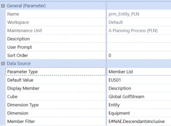
Figure 14.25
Our prm_Time_PLN Member List parameter is configured like this:
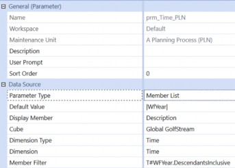
Figure 14.26
For our combo boxes, we will create Components named cbx_Entity_PRM and cbx_Time_PRM, with the Bound Parameter settings for each assigned to their respective Member Lists.
We will set appropriate Text for each (e.g., Entity: and Time:), and set the Selection Changed User Action to Refresh. For the display format settings, after a little trial and error, these settings seem to look nice:
Height = 50
HorizontalAlignment = Center
LabelPosition = Top
MarginRight = 20
VerticalAlignment = Top
Width = 200
After adding these two combo boxes to our 02_OverviewControls_PLN Dashboard, if we run our main 00_Planning_PLN Dashboard and select the Overview button, here’s what we see:
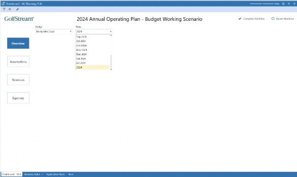
Figure 14.27
Dashboards for Budgeting, Planning, and Forecasting › Building Our Budget Overview Dashboard
Cube Views
Next, let us add our Cube View. We have configured a Cube View for this Dashboard containing the rows and columns we want for our high-level Budget overview, and we have used the prm_Entity_PLN and prm_Time_PLN parameters in its Point of View.
All we need to do now is create a Cube View Dashboard Component, select this Cube View for the Cube View setting, and attach it to the 02_OverviewDetails_PLN Dashboard as the first Component (ahead of the Charts Dashboard, which will fill column two).
With the Cube View added, running our main Dashboard now looks like this:
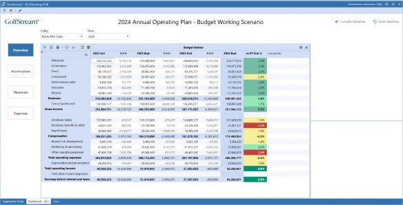
Figure 14.28 Now it is really starting to look like our original vision!
Dashboards for Budgeting, Planning, and Forecasting › Building Our Budget Overview Dashboard
Charts
Let’s add our charts. For the top chart, we will display a nice waterfall chart showing the changes in Revenue, Cost of Sales, Operating Expenses, etc. The leftmost bar in this chart – the ‘starting point’ for our waterfall visualization – will be last year’s Actual Net Income. From there, we will walk through the changes from last year to this year’s current Forecast, and then we will walk through the changes we expect to see based on the current version of next year’s Budget.
Here is what our Cube View looks like – last year’s Actual Net Income is in the first column, variances from last year to this year’s Forecast are in the next five columns, then those equivalent variances from this year’s Forecast to next year’s Budget are in the following five columns. Our budgeted Net Income for next year is in the final column (Figure 14.29):
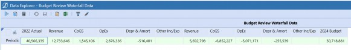
Figure 14.29
Like the Income Statement Overview Cube View, this Cube View uses the prm_Entity_PLN and prm_Time_PLN parameters to set its Point of View, so these two Cube Views will always be in sync.
To get this data to our chart, we will create a Dashboard Data Adapter. To configure this, all we need to do is set the Command Type property to Cube View, and then select this Cube View in the Cube View property – the rest of the parameters can be left to their defaults.
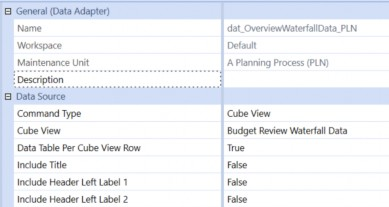
Figure 14.30
Now, we will create the actual Chart Component. Note that when creating a new Component, you actually have two choices for charts: Basic and Advanced (Figure 14.31). Basic charts are VERY basic – this chart type is only included for backward compatibility with very early releases of OneStream. You will always want to choose Chart (Advanced).
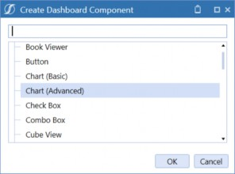
Figure 14.31
OneStream’s Chart Component provides tremendous flexibility with layout, style, formatting, and more. Because there are a lot of options, Chart Components have a lot of settings. At first, it can seem a little intimidating, but if you only focus on the settings that are important for the chart you are creating, they are really quite simple to configure.
For our waterfall chart, we will only need to make a few choices – the vast majority of the properties can be left to their defaults. Here’s what we need to set for this chart:
| Section | Property | Setting |
|---|---|---|
| Chart | Enable Animations | FALSE |
| Show Border | FALSE | |
| Legend | Show Legend | FALSE |
| Crosshair | Crosshair Label Text Format | Change in {A}: ${V:N0} |
| Chart Y-Axis | Text Format | {V:$#,##0,,)m |
| Series Properties | Type | Waterfall |
| Model Display Type | Basic | |
| Show Markers | FALSE | |
| Bar Width | 0.9 | |
| Waterfall Series Properties | Include Subtotals | TRUE |
| Subtotal Indexes | 5 | |
| Subtotal Labels | TY Forecast | |
| Subtotal Bar Color | XFLightBlueText |
Figure 14.32
Most of these settings are self-explanatory (and many of them are really just up to your personal preferences). The Crosshair Label Text Format and the Y-Axis Text Format settings define how numbers will be displayed – if you hover your mouse over the property name, a tool tip will appear with some helpful guidance on the syntax (Figure 14.33):
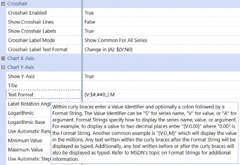
Figure 14.33
Obviously, the Model Type setting of waterfall is the most important property for this chart; when it is selected, various other properties appear that are only applicable to waterfall charts.
For this example, we are going to have three ‘total’ bars on our chart: last year’s Actual, this year’s Forecast, and next year’s Budget.
Since we have the intermediary value for this year’s Forecast, we have set Include Subtotals to True. This intermediary total is not actually included on our Cube View – only the starting value, the ending value, and all the variances we want to see are included. The waterfall chart will calculate this intermediary value for us – we just need to tell the chart how many of the variance columns should be included in this subtotal.
In our example, there are five variance columns for each Scenario, so we have set the Subtotal Indexes property to 5. The chart will sum up the starting value and the first five variance columns and draw a subtotal bar with the resulting amount. The Subtotal Label property lets us define the text under that bar, and the Subtotal Bar Color property sets the bar’s color.
With these properties set and our dat_OverviewWaterfallData_PLN data adapter added to the
Data Adapters tab, we can now add this chart to our 02_OverviewCharts_PLN Dashboard. When we run the main Dashboard now, we see this:
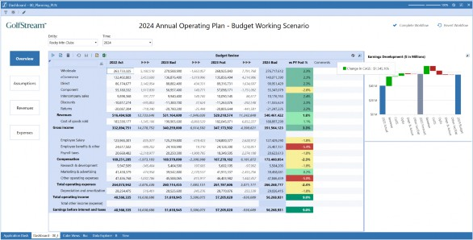
Figure 14.34
Notice that if we hover our mouse over one of the bars, the crosshair label appears using our specified text format.
Now, we will add a second chart to the Dashboard. This will be a simple bar chart showing the budgeted operating expenses. The Cube View that will supply the data looks like this:
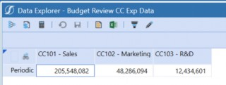
Figure 14.35
As we did previously, we will create a Dashboard data adapter with the Command Type set to Cube View and the Cube View property set to this Cube View’s name. Again, we can leave everything else at their default settings.
For our Cost Center Expenses chart, we will create a Chart (Advanced) Component and configure it using these settings:
| Section | Property | Setting |
|---|---|---|
| Legend | Show Legend | FALSE |
| Chart | Swap Axes | TRUE |
| Enable Animations | FALSE | |
| Show Borders | FALSE | |
| Crosshair | Crosshair Label Text Format | {A} - {S}: {V:$#,##0} |
| Y-Axis | Text Format | {V:$0,,.0}m |
| Label Rotation Angle | 45 | |
| Show Grid Lines | TRUE | |
| Series Properties | Type | BarRangeSideBySide |
| Model Display Type | Basic | |
| Bar Width | 0.7 |
Figure 14.36
With our dat_OverviewCCExpData_PLN data adapter attached to the chart’s Data Adapters tab, we can add this chart to our 02_OverviewCharts_PLN Dashboard, and when we run the main Dashboard, we see this:
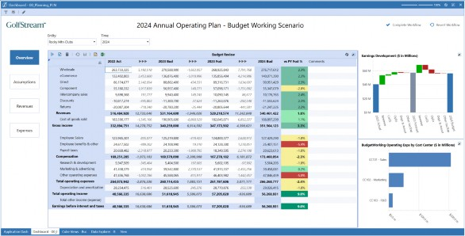
Figure 14.37
This is looking great! Just to fine-tune it a little, though, let’s add a line above the waterfall chart – that continuous white space above the chart looks a little ‘off’.
To add a line there, all we need to do is make a very simple change to the 02_OverviewCharts_PLN Dashboard. This is currently configured with three rows – the top chart, a movable splitter, and the bottom chart. If we change it to four rows, with the first row as a Line row Type and the third row as the Movable Splitter, it will look like this – a small detail, but just that easy to adjust:
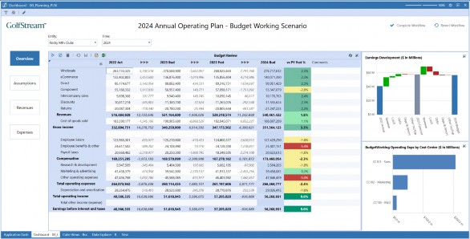
Figure 14.38
Dashboards for Budgeting, Planning, and Forecasting › Building Our Budget Overview Dashboard
Dialog Boxes
One more thing. There is a lot of very useful information conveyed by that waterfall chart, but sometimes a User might want to take a closer look. We can help with this by adding another, larger version of this chart. We can even have this larger version open in its own window when a User clicks on the chart.
First, we will configure the chart. It will be almost identical to our existing waterfall chart, so we can simply copy and paste the current chart and rename the copy.
The only change we will make to this second version of the chart is to add labels to each of the bars showing the net change represented by those bars. To do this, in our new copy of the chart, we will change the Show Point Labels to True.
We would also like to accompany this version of the waterfall chart with a Cube View clearly showing the variances making up this chart, and even provide a place for Users to enter commentary on those numbers. We can now create a Dashboard named 02_OverviewWaterfallDialog_PLN, set its Layout Type to Grid, and set the Rows to 3 and the Columns to 1. The first row will hold our chart, the second row will be a movable splitter, and the third row will hold our Cube View, so we add these Components to the Dashboard.
On the original waterfall chart, there is a setting called Selection Changed User Interface Action. We will set that to Open Dialog, and in the Dashboard to Open in Dialog setting, we enter the name of our dialog box Dashboard 02_OverviewWaterfallDialog_PLN.
Now, when we run our Dashboard, clicking one of the bars in the waterfall chart opens a new window, showing us the chart with each bar labeled with the net change it is contributing to the total variance, and our explanatory Cube View on the lower half of the window. With a little trial and error, we can use the Display Format settings on our dialog Dashboard to adjust the size of the window to fit the content – DialogHeight = 700, DialogWidth = 1050 seems to work nicely – and adjust the Row Height for Row 3 to about 250 pixels to make a well-sized frame for our Cube View.
After these adjustments, here is what we see when we click on the waterfall chart – very nice!
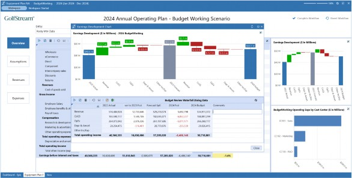
Figure 14.39
Our Overview Content Dashboard is complete! Now, using the same techniques, we can easily configure the Assumptions, Revenues, and Expenses Dashboards.
Dashboards for Budgeting, Planning, and Forecasting
Building Our Assumptions Dashboard
As part of our Planning process, we will derive much of our revenue and cost of sales using driver-based Calculations. This both simplifies the process for the End-User and helps ensure consistency across the broader plan. If an assumption has changes – say, the expected average selling price for one of our products – we only need to change that assumption once. Every value that is dependent on that number throughout the plan will automatically update.
The Assumptions step in our process lets us update these values (or review them, depending on our responsibilities and security settings). In this example, we will be planning Wholesale Average Selling Prices and Cost of Sales assumptions by Entity and Product Category. All that is needed is a simple Form to collect these prices and rates, and combo boxes to select which Entity and Product line we are working with.
Just as we did with our Overview content, we can start by modifying the simple placeholder Dashboard we created earlier to accommodate a panel with our controls at the top, and our Cube View in the body of the Dashboard. To do this, we will change Dashboard 03_AssumptionsContent_PLN to a grid layout with one column and two rows. We will set the first row to a height of 70 to hold our controls panel, and leave the second row and the column settings to their defaults.
To hold the controls for this Dashboard, we will create another simple horizontal stacked panel Dashboard, name it 03_AssumptionsControls_PLN, and add it as the first Component on the 03_AssumptionsContent_PLN Dashboard. Since we already have an Entity combo box that we created for the Overview content, we can just reuse this and add it as the first Component on the Controls Dashboard.
This Dashboard will also need a combo box to select the Product Category. Just as we did earlier for the Entities and Time combo boxes, we will first create a list parameter, selecting the appropriate Dimension and Member Filter to provide the list of products to our combo box. Then, we can copy and paste the Entity combo box, change the new object’s name to cbx_ProductCategory_PLN, and update the text and Bound Parameter settings as appropriate. We can now add this to our 03_AssumptionsControls_PLN Dashboard as the second Component.
Dashboards for Budgeting, Planning, and Forecasting › Building Our Assumptions Dashboard
The Save and Calculate Button
When our Users update their plans, we would like to provide them with a simple one-click button to save any data they have changed, and recalculate the part of the model they are working with. To do this, we will create a button Component and name it btn_Save_PLN. To give our Users a clear visual indication of what this button does, we will import an image of a shiny modern diskette and attach it to our button as the image source file.
Now, we need to tell the button what to do when it is clicked. The first thing we want to happen is to save any data the User has entered or updated. To do this, we just change the Selection Change Save Action to Save Data For All Components. With this option, a single click will save all data that has been entered, even if the Dashboard is displaying multiple Cube Views on the same screen.
After saving the data, we want the model to automatically recalculate so we can see the results of our changes. To make this happen, we will change the Selection Changed Server Task to the Calculate setting, and use the Selection Changed Server Task Arguments setting to tell the button what part of the model we want to calculate. This property has a […] button that will display a dialog box showing various examples of the syntax that this property is looking for (Figure 14.40).
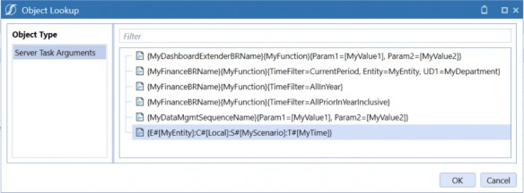
Figure 14.40
The first few examples show the syntax to use when running a Business Rule or a data management sequence. The final example in the list is the one we want – all we need to do is specify the Member Filter defining the subset of the model we want to calculate. If we select this example and click OK, this sample text will be entered into the property.
When we perform this Calculation, we only want to do it for the Entity we are currently working with – which is conveniently available to us via the parameter used by the Entity combo box.
Similarly, we only want to calculate the Scenario we are currently working with, and we want to calculate any period in the year we are working with that may be impacted by our changes. Both the current Workflow Scenario and the Workflow Year are always available to us via system variables. When we replace the sample code with our requirements, it looks like this:
{E#[|!prm_Entity_PLN!|]:C#[Local]:S#[|WFScenario|]:T#[|WFYear|M12]}
Finally, we will set the Selection Changed User Interface Action to the Refresh setting, so after the data is saved and the Calculation is run, the screen will refresh to show us the results.
That is all we need to do – our button is ready to do its job. We can now add it as the third Component on the 03_AssumptionsControls_PLN Dashboard.
The last step in configuring our Assumptions Content Dashboard is to create a Cube View Component pointing to our Product Assumptions Cube View and add it to the 03_AssumptionsContent_PLN Dashboard as the second-row Component, filling the body of the screen.
Now, when we run our main Dashboard and click the Assumptions button, here is what we see:
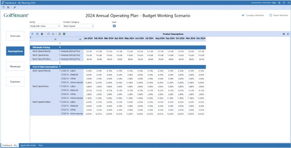
Figure 14.41
Dashboards for Budgeting, Planning, and Forecasting
Building Our Revenues Dashboard
Our Revenues Content Dashboard will be structured very similarly to our Assumptions content. Besides the name of the Cube View displayed, the only difference between the two is that our Revenues are planned at the Region and Customer Category levels, as well as Entity and Product. Our Cube View includes our Products as rows in the Form, so – for our Dashboard – we will need combo boxes for the Entity, Region, and Customer Category Dimensions.
As with our Assumptions Dashboard, we can simply reuse the existing cbx_Entity_PLN Component, and for Region and Customer Category, we can go through the same steps as all our other combo boxes. For each of these Dimensions, we first create a list parameter with the desired Dimension and Member Filter, then clone one of our existing combo boxes, replacing the text and Bound Parameter as appropriate.
Again, just like we did with the Assumptions Content Dashboard, we will start by modifying the simple placeholder Dashboard we created earlier to accommodate a panel with our controls at the top, and our Cube View in the body of the Dashboard. To do this, we will change Dashboard 04_RevenuesContent_PLN to a grid layout with one column and two rows, set the first row to a height of 70 to hold our controls, and leave the second row and the column settings to their defaults.
We will then create another simple horizontal stacked panel Dashboard, and name it 04_RevenuesControls_PLN, add the required combo boxes and the save button to this Dashboard, and add this Controls Dashboard as the first Component on the 04_RevenuesContent_PLN Dashboard.
Finally, we will create another Cube View Component, this time pointing to our Revenue Planning Cube View, and add it as the second Component on the 04_RevenuesContent_PLN Dashboard.
When we are finished, clicking our Revenues button shows us this:
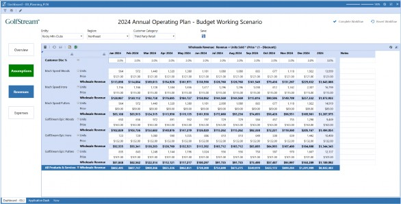
Figure 14.42
Notice also that the Assumptions button is green. That is because we clicked Complete Workflow after completing that Form, and our XFBR Rule is doing its job nicely.
Dashboards for Budgeting, Planning, and Forecasting
Building Our Expenses Dashboard
Our final Content Dashboard will again follow a similar pattern to its predecessors.
For our expenses, we plan by Entity, Region, and Cost Center. Since we already have combo boxes for Entity and Region, we will create one more list parameter for our Cost Center Dimension and Member Filter, and use this as the Bound Parameter on a clone of one of our existing combo boxes.
We will again restructure our existing 05_ExpensesContent_PLN Dashboard to be a grid-type Dashboard with two rows and one column, and the first row 70 pixels high. Then, we will create a Dashboard named 05_ExpensesControls_PLN, add our three required combo boxes and the save button to it, and add this Controls Dashboard as the first Component of Dashboard 05_ExpensesContent_PLN.
Dashboards for Budgeting, Planning, and Forecasting › Building Our Expenses Dashboard
Tabbed Dashboards
For our Expenses plan, we have two very different Cube Views that we need to complete – one for Compensation Expenses and one for Non-Compensation Expenses. We will have both of these appear in the body of the Dashboard, but we will have them in separate tabs.
To accomplish this, we will create a Dashboard named 05_ExpensesDetails_PLN, and set its Layout Type to Tabs. With this Type of Dashboard, each Component you add will appear on a different tab; in our example, each tab will have a Cube View, but we can also use tabs to display entire Dashboards of their own.
On the Display Format dialog for this Dashboard, there is a setting for TabControlStyle. There are several options available, including Classic, No Border, and Rounded Corners. We will choose the last one on the list – Rounded Corners.
As we have done before, we will now create two Cube View Components, one each for our Compensation and Non-Compensation Expense Cube Views.
Note: With these Cube View Components, be sure to enter a meaningful name for the Description property – this is the text that will appear on the tabs. |
Finally, we add our two Cube View Components to the 05_ExpensesDetails_PLN Dashboard, add the Details Dashboard as the second Component of our 05_ExpensesContent_PLN Dashboard, and we are done.
When we run our main Dashboard and click the Expenses button, here is what we see:
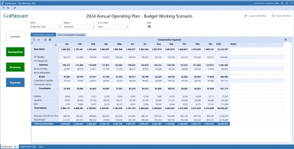
Figure 14.43
Clicking the second tab reveals the Non-Compensation Expenses Form:
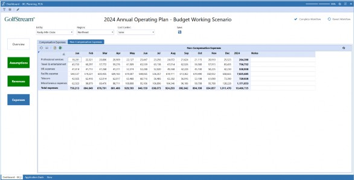
Figure 14.44
Our Planning Dashboard is complete!
Let’s take a step back and review the End-User Experience we have just established for members of our organization’s Planning community. When they sign on to OneStream, they will be greeted by the landing page we created in Chapter 11:
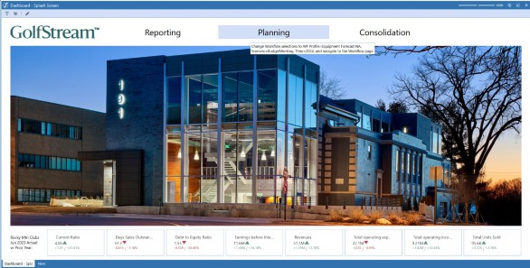
Figure 14.45
Clicking the big Planning button at the top of the screen will take them straight to the correct Workflow and the current in-progress version of next year’s Budget. There, they will be greeted by a clean, informative, and easy-to-navigate Budget Overview Dashboard:
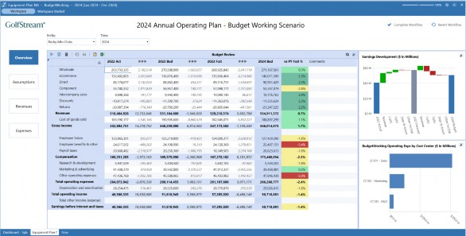
Figure 14.46
Clicking through the clearly marked navigation buttons on the left-hand side of the screen, Users will be taken directly to the Forms they need to fill out, each with drop-down boxes for the Dimensions appropriate to their content, and each with a Save button that will both commit their changes to the model and recalculate the Entity, Scenario, and Year they are working on.
Figure 14.47
At any step in the process – with one click – our Users can return to the Overview page to review the impact their changes have on the full Income Statement. Once satisfied, they can mark each step as ‘complete’ and be confident that none of their required tasks have been missed. And they can also be confident that they have established a solid, achievable plan for the coming year!
Dashboards for Budgeting, Planning, and Forecasting
Conclusion
This chapter was all about – as the name suggests – Dashboards for Budgeting, Planning, and Forecasting! We covered a lot of ground, including header configurations, navigation panes, embedding Dashboards, and even a look at Dashboard Business Rules.
Later, we saw how Dashboards could be attached to Workflow Profiles, before building example Assumptions, Revenues and Expenses Dashboards. And with that, we find this book drawing to a close. Just one final chapter to go…